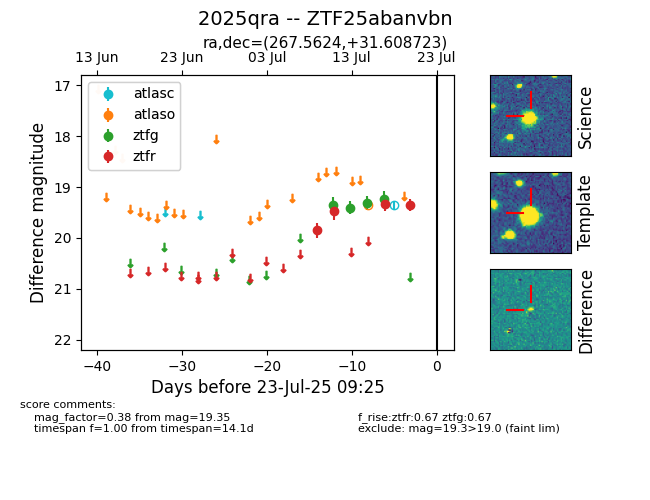

Target ZTF25abanvbn at 2025-07-23 11:48, see:
FINK: fink-portal.org/ZTF25abanvbn
Lasair: lasair-ztf.lsst.ac.uk/objects/ZTF25abanvbn
ALeRCE: alerce.online/object/ZTF25abanvbn
TNS: wis-tns.org/object/2025qra
YSE: ziggy.ucolick.org/yse/transient_detail/2025qra
alt names
ZTF25abanvbn (ztf,fink)
2025qra (tns,yse)
coordinates:
equatorial (ra, dec) = (267.5624,+31.60872)
galactic (l, b) = (56.8306,+26.03726)
photometry
last ztfg=19.24, ztfr=19.35
4 ztfg, 4 ztfr detections
